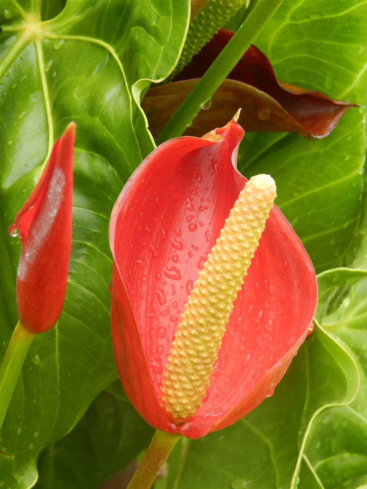
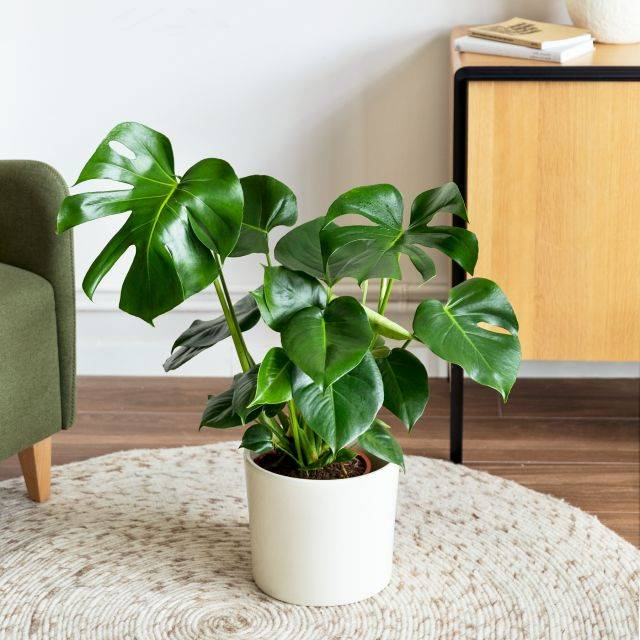
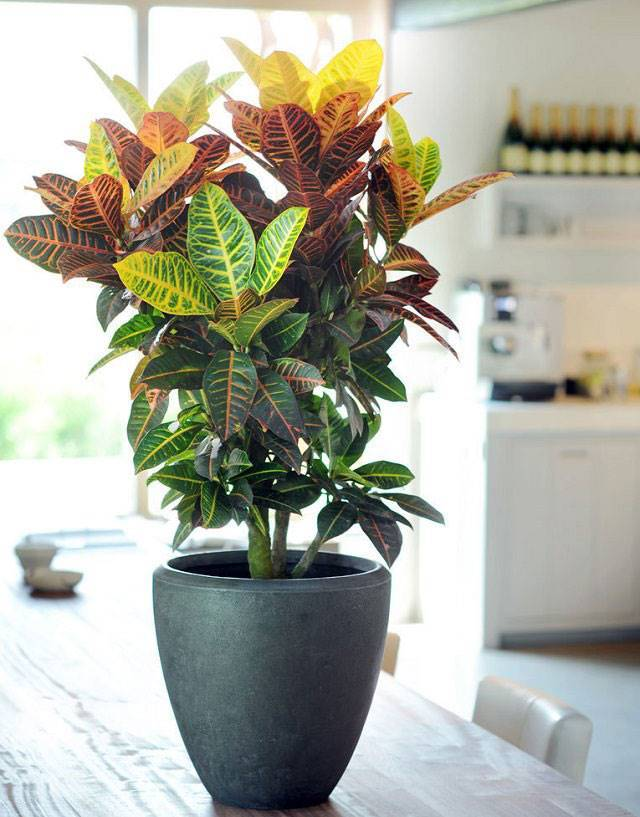
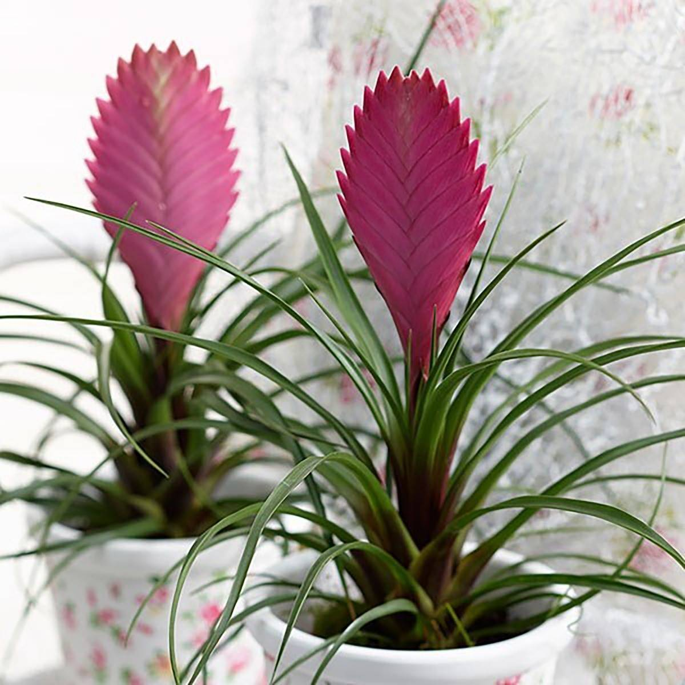
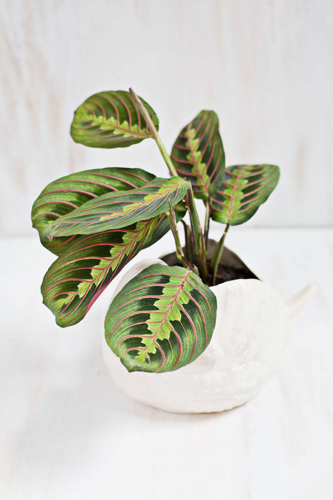

Lo que más llama la atención de esta planta son sus hojas: de un color verde azulado en la parte superior, mientras que el envés es violeta. Además, se desdoblan durante el día y se vuelven a enrollar por la noche. No soportan temperaturas inferiores a 15º, agradecen una exposición a la luz moderada –sin sol directo– y les gusta la humedad. Es recomendable pulverizarlas regularmente o colocar un plato con guijarros y agua debajo de la maceta. La evaporación aumentará la humedad ambiental y beneficiará a la planta. Estos son los cuidados de la Calathea.
El Anthurium es una de las plantas más resistentes. Su flor es muy característica: se trata de una espiga rodeada de una hoja de color intenso en forma de corazón. Aunque su color más habitual es el rojo, también puede encontrarse en blanco, púrpura, naranja y hasta negro. Al ser una planta tropical necesita una temperatura superior a 15º. Para conseguir la humedad adecuada, pulverízala o coloca una bandeja con guijarros con agua. Así las raíces no estarán en contacto con el agua, pero la humedad que produce al evaporarse la beneficiará.
La monstera es famosa por su exhuberante hoja agujereada y es una planta tropical proveniente de Centroamérica. Es muy fácil de mantener pero en casa necesitará un tutor para mantener las hojas hacia arriba. Por lo tanto, hay que tener en cuenta sus cuidados. Es mejor que le des espacio suficiente para que crezca generosamente. Como detalle natural y refrescante, puedes situarlo en una estantería o sobre una cómoda.
Esta colorida planta de interior es fácil de cuidar y, sobre todo, llenará tu casa con su particular y vistoso colorido. Y es que las hojas del crotón destacan por su color rojizo y brillante. Necesita mucha luz, pero sin sol directo, por lo que junto a una ventana, se desarrollará perfectamente. Controla que el sustrato esté seco entre riegos y evita encharcar sus raíces. Es amante de la humedad ambiental, por lo que agradecerá que la pulverices con agua tibia de vez en cuando.
Esta espectacular planta se compone de múltiples hojas largas y curvadas y una bráctea en forma de espiga de un llamativo color rosa. Pero esta bráctea no es la flor, sino que sirve para proteger las pequeñas flores violetas que nacen sobre ella. Pertenece a la familia de las Bromelias y es una planta epífita, es decir, que crecen sobre otras plantas y se aprovechan de sus nutrientes (la orquídea también lo es). Respecto a sus cuidados, necesitan temperaturas entre 15 y 25º, lo que las hace perfectas para interiores de casas, y una iluminación indirecta. El exceso de agua puede ser perjudicial y la mejor manera de regalarla es mediante pulverización (hojas y capa superficial de tierra) una vez a la semana. Dos durante los meses de más calor.
Es conocida también como Maranta tricolor y se la llama planta de la oración porque por las noches tiende a cerrar sus hojas ligeramente. Necesita mucha luz, pero indirecta para que muestre todos sus vibrantes colores, tanto de las hojas como de sus nervios. Necesita un sustrato turboso y le gusta la humedad ambiental, por lo que convendrá pulverizar sus hojas en verano. Coloca un plato con guijarros debajo de la maceta y tras los riegos elimina el agua sobrante